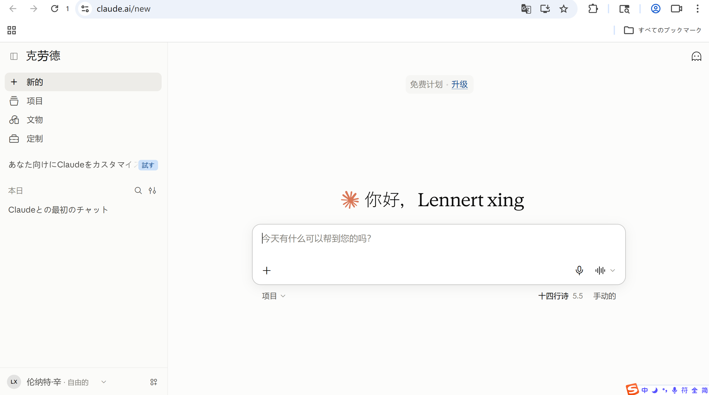
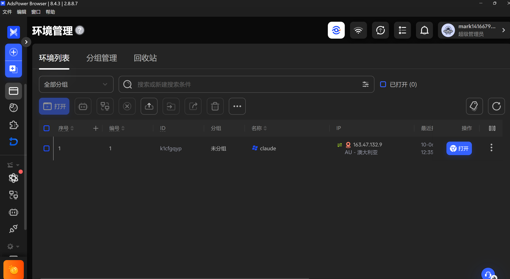
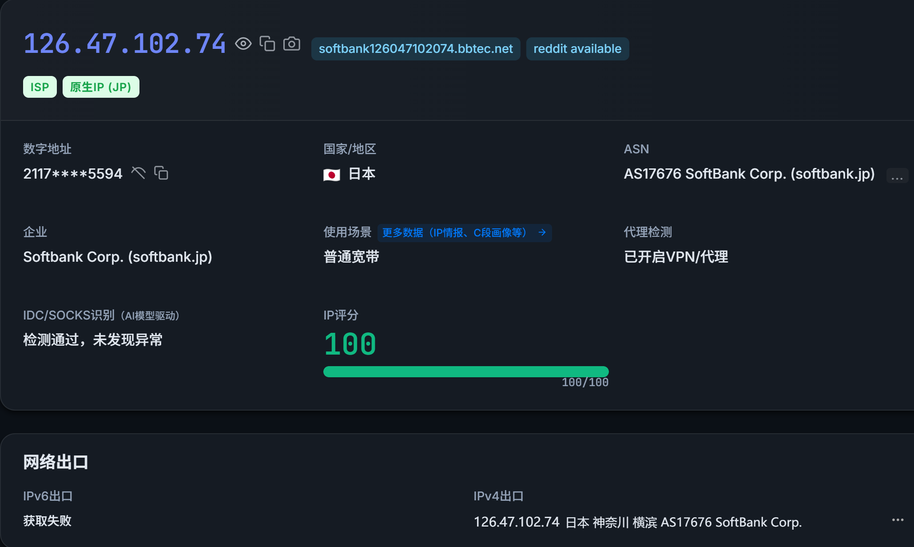
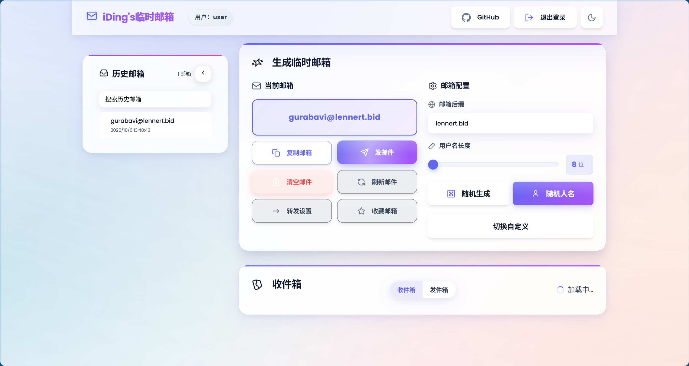

Claude 免费版批量注册：两分钟搞定一个号
说实话，Claude 这订阅是真的不太敢长期用——贵是一方面，主要是一旦被封，钱就白花了。所以我干脆走了免费版这条路：多注册几个号轮着用，封了就再注册一个，反正一个号两分钟的事。
下面就是我自己跑通的一整套流程，你照着做就行。
一、先说效果和耗时
一个号，从零到能聊天，大概两分钟。全程不花钱、不用绑卡。
| 步骤 | 做什么 | 耗时 |
|---|---|---|
| 1 | 打开 AdsPower 里的一个环境（用的是家宽节点） | 几秒 |
| 2 | 生成一个临时邮箱，复制到 Claude 注册页 | 20 秒 |
| 3 | 点邮件里的验证按钮，注册完成 | 1 分钟 |
想再注册一个？不用换节点、不用新建环境，只要重新生成一个邮箱就行。 这才是它能做到"批量"和"两分钟"的原因。
折腾完就是这个样子——一个能正常聊天的免费版账号：

二、需要用到的东西
一共三样，我这边该搭的都搭好了，你只需要装第一个。
1. AdsPower 指纹浏览器（需要自己下载）
👉 下载地址（这个必须装）：https://www.adspower.net/
装好、注册个账号登录就行，免费版完全够用。
这东西说白了就是给每个账号一个独立的浏览器身份，免得几个号之间互相串味。
2. 一条家宽节点（我提供订阅链接）
用你平时那个梯子客户端（Clash 之类）导入下面这条订阅，里面挑家宽节点用：
https://f-sub.xn--8pr28c250c1edz9a.xn--fiqs8s/api/v1/client/subscribe?token=1aadcd94210971d38308b2c61954ffed挑节点的标准就一条：是家宽（住宅宽带），并且能通过 IP 检测。日本、美国都行，我自己用的是日本家宽，下面截图也是日本的。
⚠️ 这条链接等于我账号的凭证，别往外发。万一流出去了，我去后台重置一下订阅地址就失效了。
3. 临时邮箱系统（我已经搭好了，直接用）
👉 入口：https://mailfree.1416679017.workers.dev/
👉 账号 user ／ 密码 123456
邮箱地址不用提前创建，打开页面点一下就能生成一个，随手编一个也行。
三、为什么要这么做
1. 免费版封了不心疼。
花钱订阅的号被封，损失是真金白银；免费号被封，重新注册一个就是了。
2. 免费版额度少，但可以靠数量补。
额度是滚动的，聊满一段时间会提示等待，过会儿自动恢复。那就多注册几个轮着用——A 用完了换 B，B 用完了换 C。
3. 免费版能用的模型其实不差。
免费额度内可以直接选 Sonnet 档（我注册时是 4.6，现在能选到 Sonnet 5.5，界面上显示「十四行诗 5.5」）。日常聊天、写东西、读代码改 bug 都够用。更强的 Opus 档要 Pro，免费版用不到——所以想摸更高档位，还是得靠多号轮换。
4. 关键是"环境干净 + 节点干净"。
这就是为什么要用指纹浏览器 + 家宽节点：普通浏览器多开，Cookie 和指纹是共用的，几个号必然互相关联；机房 IP 在风控眼里基本等于"批量工具在跑"。这两样齐了，注册才能顺。
更细的原理我放在最后面了，不影响你上手，想深究再看。
四、具体怎么做
第 1 步：装好 AdsPower，注册登录
下载 https://www.adspower.net/ ，装好之后注册账号、登录，进到「环境管理」页面。
第 2 步：新建一个环境
点新建环境：
- 名称：随便起，比如
claude - 代理配置：类型选 HTTP，主机
127.0.0.1，端口填你 Clash 的本地混合端口（也可以用下面的"本机 IP"方案，二选一）
| 客户端 | 常见本地端口 |
|---|---|
| Clash Verge / Verge Rev | 7897 |
| Clash for Windows | 7890 |
| 其他 | 看客户端界面上写的"混合端口" |
- 填完点 检查代理（用上面"本机 IP"方案的话没有这一步），确认出口 IP 是家宽（普通宽带 / ISP），不是机房
- 保存
💡 为什么绕一圈用本机 Clash 中转：指纹浏览器只要一个稳定的出口 IP。节点在 Clash 里换，浏览器这边端口不用动。代价就是注册的时候 Clash 得一直开着。
更省事的一种做法：不填代理，直接用本机 IP。
让梯子开虚拟网卡模式（TUN）+ 全局模式，也就是所有流量都走本机那块虚拟网卡。这样梯子一连上，浏览器自然也跟着走梯子的流量了。
然后 AdsPower 建环境的时候，代理那里直接选 不使用代理 / 本机 IP 就行，不用填端口，也不用一个个环境去配代理。
具体怎么开这个模式，各家的梯子客户端位置不太一样，直接问一下 AI 就行（跟它说清楚你用的是哪个客户端），很简单。
新建好的环境在列表里长这样，名称、IP、最近使用时间都能看到：

第 3 步：打开环境，先测一下节点
注意是在 AdsPower 打开的那个窗口里测，不是你本机的浏览器：
👉 打开 https://iplark.com/
看到这几个就合格了：
- IP 评分 100 / 100
- 有
原生 IP标签，国家/地区跟节点对得上 - 使用场景 = 普通宽带（不是机房 / IDC / 托管）
我实测日本家宽的结果，你可以直接照着比对：

不合格就换一个家宽节点重测，别硬着头皮往下注册。
⚠️ 页面上 代理检测 显示「已开启 VPN/代理」是正常的，你本来就在用梯子。真正看的是原生 IP + 普通宽带 + 评分 100 这三项。
第 4 步：生成一个临时邮箱
打开 https://mailfree.1416679017.workers.dev/ ，用 user / 123456 登录。
操作就三下：
- 点 随机生成 → 拿到一个地址
- 点 复制邮箱 → 等下填进 Claude
- 注册完回来点 刷新邮件 → 会收到 Claude 的验证邮件
界面长这样，左边「历史邮箱」会记着你生成过的所有地址：

第 5 步：去注册 Claude
回到 AdsPower 那个环境窗口：
- 打开
claude.ai，点注册 - 邮箱填刚才复制的那个，设个密码
- 回邮箱页面点 刷新邮件，点邮件里那个 注册 / 跳转按钮 完成验证（⚠️ 这一步有个坑，见下面）
- 姓名、生日随便填，不用真实
- 进到对话页，能发消息就成了
⚠️ 注意：别去复制邮件里的验证码数字，它不可靠。
我自己试出来，那个验证码是重复的（多次注册拿到的号码一样），拿它去填大概率过不去。邮件里 Claude 会给一个「注册 / 跳转」的按钮，用那个才稳。
两种做法都行：
- 直接点那个按钮（想在新窗口开，就右键 → 在新标签页打开）
- 复制按钮的链接，粘到浏览器新标签页里打开
怎么都行，就是别复制验证码本身。
不想开网页看邮件的话，可以用命令行等信、看信：
.\fm.bat claude01 -Wait -Full它会自动等到新邮件并把内容打出来，你从里面拿按钮链接就行（同样别用那个验证码数字）。
第 6 步：确认一下成了
结果就是开头那张图的样子。几个容易犯嘀咕的地方，我提前说一下：
- 顶部写着 免费计划 · 升级 → 说明确实是免费版，没绑任何支付方式
- 模型那里是 十四行诗 5.5（Sonnet 5.5）→ 免费额度里能直接用的档
- 界面是日文 → 因为节点在日本，正常现象，不是号有问题
界面想变中文，直接在对话里说一句「请用中文回答我」就行。
想再注册一个？
只换邮箱，别的都不动：
回邮箱页面点「随机生成」→ 拿到新地址 → 复制 → 填进 Claude 注册页环境还是那个环境，节点还是那条节点，所以下一个号还是两分钟。
📌 建议每个号用不同的邮箱地址，以后好区分是哪个号在收信。 📌 别在短时间内用一条节点连着一口气注册太多，慢一点更稳。
五、账号到手之后，两件事必须做
一、把号和密码记下来
尤其是 AdsPower 的环境要备份导出——登录态是存在环境里的，环境丢了，光有密码也可能登不上去。顺手把邮箱、密码、注册日期记个表，心里有数。
二、重要的东西当天就存到本地
Claude 的对话只存在它服务器上，号一没就全归零。所以它给你写的代码、方案、文章，当场复制到自己电脑或者仓库里，别指望留在对话记录里。另外别往里贴内网地址、密钥、真实客户数据这些东西。
另外：xxx@lennert.bid 是临时邮箱，别拿它注册别的重要账号，也别用它当找回邮箱。
六、用这类账号的几个原则
目前没听说这种号被封，但以后会不会查、会不会封，我不敢保证。所以就当"日抛型"的用：没了再注册，两分钟的事。
- 额度用完就换号，别硬试，反复试探限流最容易被盯上
- 别绑支付方式，保持纯免费，封了不心疼
- 别搞异常操作，刷接口、批量请求这些别碰
- 重要的东西随时备份
七、原理（想深究再看）
邮箱为什么能"无限"？三句话
- 域名交给 Cloudflare 托管，域名的 DNS 和邮件入口都归它管
- Cloudflare 的「全收」规则把所有来信都收下，任何前缀的地址都接，不用提前建邮箱
- Worker 把邮件接住、转存到我的临时邮件系统，你打开网页就能看验证码
所以"无限"说的是地址数量无限：claude07@lennert.bid 这种随手编一个就能收信。一个域名等于无穷多个邮箱。
完整的搭建流程我放这篇博客了。
为什么非得是家宽节点
风控看的不是你在哪，而是你这个出口 IP 像不像真人在用：
| 节点类型 | 风控眼里 | 结论 |
|---|---|---|
| 机房 IP（IDC / 云服务器） | 一看就是批量工具在跑 | ❌ |
| 家宽（住宅宽带）IP | 像个普通家庭在上网 | ✅ |
要求就一条：是家宽，并且过得了 IP 检测。日本美国都行。
指纹浏览器是干嘛的
普通浏览器多开，Cookie、指纹、时区、语言全是共用的，几个号必然互相牵连。AdsPower 是给每个环境一套独立身份：
- 独立指纹：一套独立的浏览器指纹
- 独立代理：环境绑死一个出口节点，登录时和注册时一致
- 独立存储：Cookie 和登录态互不污染
配上干净的家宽节点，就凑齐了注册需要的两个硬条件：
干净的浏览器环境（AdsPower） + 干净的家宽节点 + 无限邮箱（临时邮件系统）
↓
可以批量注册 Claude 号补一句：一个环境和一条节点可以服务好几个号——注册下一个号只换邮箱，别的都不用动。
附录A：想自己搭一套临时邮箱系统
这部分我不在这儿重复写了，完整流程我发在博客上了，自建的话照着走就行：
👉 https://lenblog.top/posts/freeemail-%E6%97%A0%E9%99%90%E4%B8%B4%E6%97%B6%E9%82%AE%E7%AE%B1%E6%90%AD%E5%BB%BA%E6%95%99%E7%A8%8B/
搭建本身的原理不复杂，就是三句话：域名交给 Cloudflare 托管 → 用「全收」规则把所有来信都收下 → Worker 把邮件接住、转存到你的临时邮件系统。你不用提前建邮箱，随手编一个地址就能收信。
⚠️ 这里有个坑，一定要先说：域名一定要自己买一个顶级域名，别用免费的二级域名（比如 dpdns.org、us.kg 这类）。这种免费后缀用的人太多，Cloudflare 会直接给你风控——添加站点或者接 Email Routing 的时候就被拦下来，白折腾。自己买个 .bid 之类的顶级域名，一年也就十几块，买完就能一路走通。
💡 不想搭也没关系：用我搭好的那套就行（见上面「需要用到的东西」第 3 条），入口和账号密码都给了。
附录B：常见问题
Q：注册时邮件里的验证码填不进去？
别填验证码，那个码是重复的、不可靠。点邮件里 Claude 给的 注册 / 跳转按钮，或者复制这个按钮的链接、粘到新标签页里打开，这样就没问题。
Q：AdsPower 里代理一定要配吗？
不一定，两种都行：① 在环境里填 127.0.0.1 + Clash 的本地端口；② 梯子开虚拟网卡（TUN）+ 全局模式，环境直接选"本机 IP / 不使用代理"。第二种更省事，不用逐个环境配代理。
Q：一定要用日本节点吗？
不用，家宽就行，日本美国都能用，关键是过得了 IP 检测（原生 IP、普通宽带、评分满分）。
Q：安装包在哪下？
https://www.adspower.net/ ，这个必须装。
Q：界面变成日文/英文了，有问题吗？
没问题，是节点地区导致的。对话里说一句「请用中文回答我」就行。
Q：额度用完了怎么办？
等它滚动恢复，或者直接换个号继续——这就是为什么要多注册几个。
Q：号会被封吗？
目前没听说，但我不能保证。所以当"日抛型"用，重要数据随时备份，封了就再注册一个。
Q：注册多个号要换节点、换环境吗？
不用。只换邮箱：回邮箱页面点「随机生成」，拿新地址去注册就行，环境和节点都不用动。
Q：我自己也想搭一套临时邮箱系统，怎么搞？
看这篇博客，流程我都写在里面了。记得自己买个顶级域名，别用免费二级域名，不然会被 Cloudflare 风控。
本文基于自己实际搭建和注册的过程整理，里面的报错都是真遇到的。邮件系统项目版本：V5.3.1。